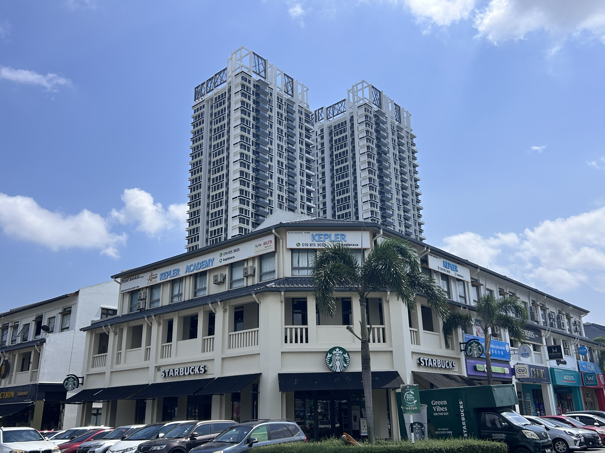

Master the KSSR & KSSM syllabus with experienced, professional teachers. Build exam confidence and achieve outstanding results in UASA, SPM & STPM.
1200 × 1200 · WebP
At Kepler Academy, our students don't just memorise the syllabus; they grasp the “why” behind every concept. The result is verified progress, visible confidence in the classroom, and a genuine love for learning that goes far beyond report-card grades.

Fully aligned with the KSSR/KSSM curriculum set by Kementerian Pendidikan Malaysia (MOE). We focus on Higher Order Thinking Skills (HOTS) so students excel in modern exam formats that reward application and analysis — not rote memorisation.
A maximum of 8 students per class ensures every child gets targeted teacher attention.
Students meet new material before class via the Pandai app, then work through problems with the teacher's guidance in class.
A proprietary question bank engineered to mimic the trickiest SPM/STPM formats. Students practise under timed conditions to build speed and accuracy.
We don't just teach — we track. Parents receive a weekly Progress Snapshot detailing the exact HOTS skills mastered and the areas that need reinforcement.
We bridge the gap between knowing the answer and having the confidence to raise your hand. Students build presentation skills and active participation so they're noticed and praised in their mainstream school.
“I believe every child is a ‘STEM person’. They just need the right story and the right strategy to unlock it.” Known for turning ‘STEM anxiety’ into STEM enthusiasm through real-world examples.
After struggling with Physics, Sarah jumped from 65% (C) to 88% (A) in just three months by shifting focus to practical application.
“Kepler didn't just help with the syllabus — they gave my son the confidence to speak up in class. His form teacher actually called to ask what we'd changed at home!”
Every school holiday, Kepler opens the door to a brand-new world. Our Korean Language Camp gives students a fun, immersive introduction to Hangul, everyday conversation, and Korean pop culture — no experience needed.
Runs during the school holidays · Beginner-friendly · Ages 10+ · Certificate on completion
Don't wait for the next exam to realise a different approach is needed. Start building their confidence today.
Book my free academic review